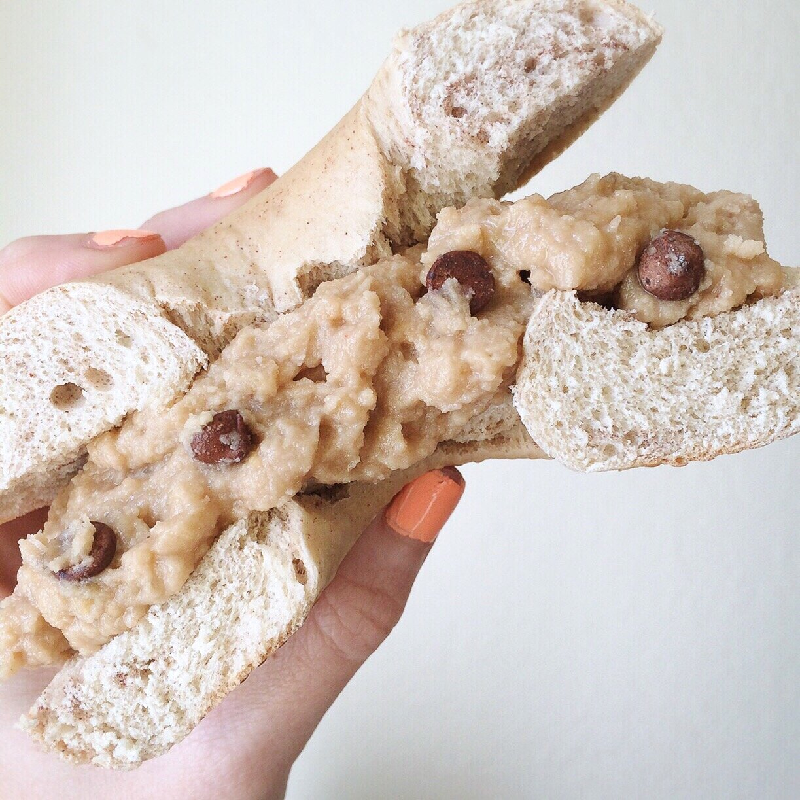

Vegan Banana Bread Dip (gluten free)

banana bread dip, banana, batter, cake, vegan, vegan banana bread dip

bagel, vegan banana bread dip, banana bread, vegan, batter
Vegan Banana Bread Dip. Sweet, creeeeamy, like a cake batter you can eat right away! This recipe is no-bake and takes 5 minutes to make! Vegan, gluten free, and even packs some quality protein!
What do I even say about this?! 1) French Toast bagel okayyy 2) Banana Bread dip. I haven't made any "dips/batters" since I had to give up dairy BUT I decided to try today and I WINNNN. It paired perfectly with the mapley, cinnamony, french toast bagel.
Let me tell you a tragic story. It started 3 days ago; it was a Sunday. I was browsing Instagram casually, enjoying my day. When all of a sudden it happened. It happened fast. There it was... kabocha squash. I saw it in my feed and I swear it was looking back at me. I quickly diverted my eyes and moved on as quick as I good. Scrolling, scrolling, and IT STOPPED ME AGAIN. THE KABOCHA. Another feed, but it found it's way in my vision again. I couldn't stop thinking about it. Next day, new day, not burdened by the kabocha any longer. I was enjoying my Monday... when around 4 pm... the kabocha stalked into my life again. Too late and too many other things to do at that time, there wasn't enough time in the evening to get any kabocha. I promised myself I would get some the next day to stop the stalking torture. But again, I forgot. And of course, once again, it found me around sun down. Helpless, I let it bother me for hours, but eventually led my life as normal. That brings us to the present day. Wednesday. Determined not to let it take over my day once again, I ventured out to the store to get kabocha. I went prepared. Went through the sliding doors, took a slight right to the produce section. Second aisle, squash aisle... No. Kabocha. There were all kinds of squash. Butternut, acorn, carnival, even delicata. But no kabocha... Helpless, once again, there was nothing I could do. So I picked up some sweet potatoes and went on my way. No other store in town sells kabocha. The kabocha is a powerful force, and currently, it's destroying my life.
That's my story, and you're my witness. I'll let you know when I am triumphant. Until then, I'm just gonna eat my vegan banana bread dip. And you should to!!
Vegan Banana Bread Dip (gluten free)
Serves: 1
-
1/2 ripe banana
-
1 TBSP coconut flour
-
1/2 scoop protein powder (13-15 g, I did Nuzest vanilla plant based protein)
-
1 TBSP almond butter
-
1 TBSP IMO fiber syrup
-
1 stevia packet
-
1/4 tsp vanilla extract
-
1 TBSP walnut pieces (Optional)
-
1 TBSP mini chocolate chips (Optional)
First, mash the banana. Then add the remaining ingredients and mix!!! THATS IT. If you don't have the IMO fiber, maybe try maple, agave, or sugar free syrup.